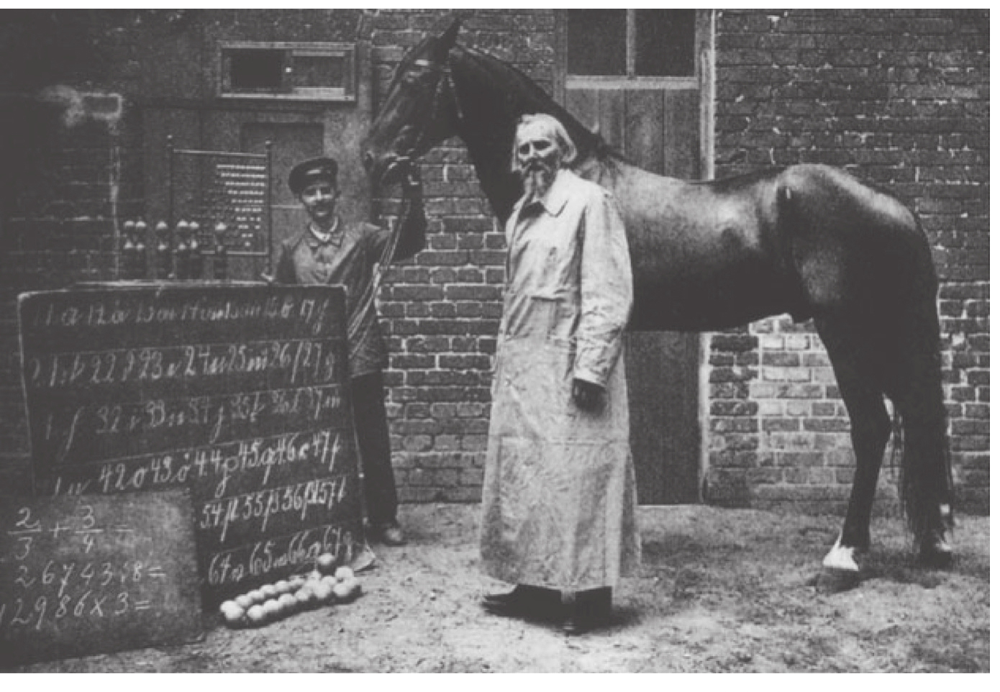
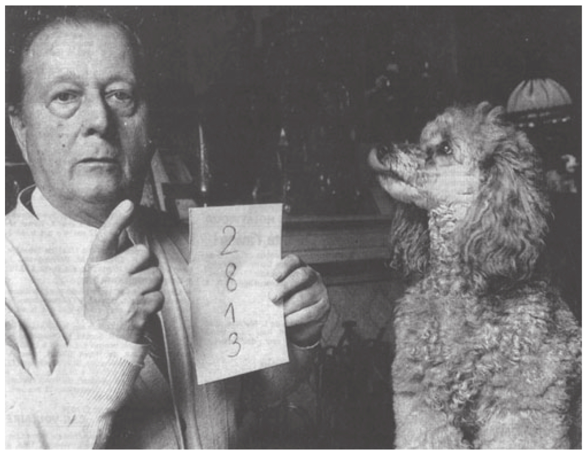

在20世纪初，一匹名叫汉斯（Hans）的马登上德国报纸1的头条。它的主人威廉·冯·奥斯滕（Wilhelm Von Osten）可不是一名普通的马戏团驯兽师，受到达尔文观点的影响，他热衷于证明动物的智力水平。他用十多年的时间教他的马学习算术、阅读和音乐。虽然训练的效果过了很久才体现出来，但是最终却大大超出了他的预期。这匹马似乎拥有极高的智力，它可以解决算术问题，甚至可以拼出单词！
冯·奥斯滕常常会在自家院子里向众人展示聪明的汉斯的能力。人们在汉斯的前面围成一个半圆，并向驯马师提出一个算术问题，比如：“5加3等于多少？”冯·奥斯滕会在汉斯面前的一张桌子上摆上5件物品，在另一张桌子上摆上3件物品。在仔细审“题”之后，汉斯就会以蹄子敲击地面的方式来回答问题，敲击的次数与两数相加的和相同。然而，汉斯的数学能力远不止在这种简单的技艺上所表现的。对一些由观众口头提出或用数字符号写在黑板上的算术问题，汉斯仍能够轻松地解决（见图1-1）。汉斯还能解决两个分数相加的问题。比如“2/5+1/2”，它会先敲击9下，再敲击10下，给出9/10的答案。据说，即便是“28的约数有哪些”这样的问题，汉斯也能够给出非常准确的答案：2、4、7、14和28。显然，汉斯对数字知识的了解已经远远胜过了那些聪明的小学生！

聪明的汉斯和它的主人站在一排令人印象深刻的算术问题前。较大的黑板上显示的是马用来拼写单词时使用的数字代码。
图1-1 聪明的汉斯
资料来源：版权所有©Bildarchiv Preussicher Kulturbesitz。
1904年9月，一个专家委员会对汉斯的技艺进行了深入彻底的调查，著名的德国心理学家卡尔·斯图姆夫（Carl Stumpf）也是委员会成员之一。他们最终得出结论：汉斯的技艺是真实的，并不存在欺骗性。然而，这个笼统的结论并没有使斯图姆夫的学生奥斯卡·芬格斯特（Oskar Pfungst）感到满意。在冯·奥斯滕的帮助下——这位主人确信他的天才马具有极高的智力，芬格斯特开始对汉斯的能力进行系统的研究。芬格斯特的实验，即便拿现在的标准来看，也是严密和富有创造力的典范。他的研究假设是：汉斯对数学根本一无所知，因此，一定是主人自己，或是人群中知道答案的某人，在汉斯敲击到正确数字的时候给了它隐蔽的信号，从而使它停止敲击。
为了证明这个假设，芬格斯特设计了一个方法，将汉斯对问题的认识与主人对问题的认识区分开来。他将之前的程序进行了微小的调整：主人可以看到用很大的印刷体写在题板上的简单加法算式，之后题板会转向汉斯，使得它能够看见问题并解答。然而，在实验中，有时芬格斯特在向汉斯展示问题之前会暗中调换加法算式，比如，主人看到的是“6+2”，而实际上汉斯要尝试解决的问题是“6+3”。
在经过一些后续的细节控制之后，这项实验的结果非常明确。每当主人知道正确答案时，汉斯就能得出正确答案，而当主人不知道正确答案时，汉斯则会给出错误答案。另外，汉斯所给出的错误答案通常就是主人所期待的数字。显然，是冯·奥斯滕自己，而不是汉斯，得出了不同算术问题的答案。但是汉斯究竟是怎样知道要在何时停止敲击的呢？芬格斯特最终推断，汉斯真正惊人的能力在于它能够捕捉到主人头部和眉毛的微小动作，而这些动作通常表明停止敲击的时机。事实上，芬格斯特一直确信这位驯兽师是诚实的。他相信那些信号的发出完全是无意识的，而并非故意所为。即便冯·奥斯滕不在场，马也能继续给出正确的答案：显然，当敲击到正确的数字时，汉斯能够感受到观众的情绪中增长的紧张感。即便发现了汉斯能够利用哪些身体线索，芬格斯特也不能阻断人们与它进行无意识交流的所有方式。
芬格斯特的实验对“动物智力”的论证提出了严重质疑，同时也对那些像斯图姆夫一样自称专家却盲目认同这一论点的人的能力提出了质疑。确实，今天的心理学课堂中仍在讲授“聪明的汉斯现象”，它仍然象征着实验者的预期和干预可能对心理实验结果产生的不良影响，不论这种预期和干预多么微乎其微，不论实验对象是人还是动物。从历史层面来看，汉斯的故事在塑造心理学家和动物行为研究者的批判性思维方面起了重要的作用，它让人们注意到严谨的实验设计的必要性。一个很难被注意到的刺激，比如眨眼，都可以影响动物的表现。因此，一个设计良好的实验必须避免一切可能的失误源。这一教训尤其被行为主义者很好地接受了。比如斯金纳（Skinner），他做了大量的工作，致力于发展动物行为研究的严谨实验范式。
然而，汉斯这个典型案例也对心理科学的发展产生了很多负面的影响。它使得人们对整个动物数字表征的研究领域充满质疑。具有讽刺意味的是，每当有人证明动物的数字能力时，科学家们就会挑起眉毛，就好像在给汉斯提供解题线索似的。人们总会有意无意地将此类实验与汉斯的故事联系起来，它们即便不被认定为是伪造的，也会被质疑设计存在缺陷。这其实是一种不合理的偏见。芬格斯特的实验只是证明了汉斯具有数字能力是一种巧合，并没有证明动物不可能理解算术的某些方面。在很长一段时间内，科学家们只是系统地寻找一些实验偏差来解释动物行为，而完全不去考虑“动物拥有初始阶段的计算知识”这一假设。当时，即便是最有说服力的结果也不能说服任何人。一些研究者甚至倾向于认为动物有一种神秘的能力，例如“节奏辨别”的能力，而不愿意承认动物可以对客体集合进行计算。简言之，科学界往往在倒洗澡水的时候，将婴儿也一起倒掉了。
在引入一些最终得到所有人（除了那些最多疑的研究者）信服的实验之前，我想以一则现代故事来结束汉斯的故事。即便是在今天，对马戏团动物的训练用的也是与汉斯那时一样的把戏。如果你曾经在一场表演中看到动物将数字相加、能拼写单词，或是做类似的令人惊奇的事情，你完全可以确定，这些行为就像汉斯的行为一样，依靠的是驯兽师和动物之间的隐蔽交流。我要再次强调，这种交流并不一定是有意的。驯马师通常是由衷地对他的“学生”的天赋确信无疑。几年前，我在一份瑞士本土的报纸上看到一篇有趣的文章。一位记者拜访了吉勒（Gilles）和卡罗琳（Caroline），他们饲养的一只名为普佩特（Poupette）的贵妇犬似乎在数学上表现出超凡的天赋。图1-2中是普佩特自豪的主人，他正将一系列写在纸上需要相加的数字展示给他那位忠实而聪明的伙伴。普佩特用爪子拍打主人的手，用拍打的次数表示确切的数字。当拍到正确的次数时，它会舔主人的手，在此过程中它没有出现一次错误。据它的主人说，这只天才的贵妇犬只接受了很简短的训练就有了这种能力，这使他相信了轮回或类似的超自然现象。然而，这位记者敏锐地发现，当拍到正确数字时，这只狗能够从主人的眼皮或是手部的微小动作中获得提示。所以这确实是一种轮回：聪明汉斯的策略进行了一次轮回，在一个世纪之后，普佩特对其进行了一次惊人的重现。

普佩特，现代狗家族中的“聪明的汉斯”，据称这只狗能做加法运算。
图1-2 能做加法的狗